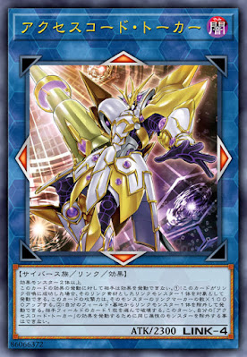

駕馭疾風吧! 技能『Neo Storm Access』!
風を掴め！スギル『ネオストームアクセス』!
碼語者系列是遊戲王Vrains主角藤木遊作所使用的牌組，主打連結召喚。
戰術靈活是碼語者的一大特色，進可攻退可守，雖然沒有強力定場怪，
但是可以兼容大量後台和單卡展開並擁有連碼語者的強力斬殺手段，
讓他在賽場能有一席之地。
《微程式編碼員》
此卡名的①②效果1回合各僅能使用1次。
①：把我方場上網域族怪獸作為「碼語者」怪獸連結素材的場合，手牌的此卡也能作為連結素材。
②：此卡作為「碼語者」怪獸連結素材從手牌﹒場上送去墓地的場合才能發動。從牌組把1張「網際」魔法﹒陷阱卡加入手牌。場上的此卡為素材的場合，可以把那1張改成1體網域族﹒等級4怪獸。
核心檢索卡，可以檢索的範圍非常廣泛，想換手牌、爆展一波、反制陷阱都要靠他。
可以用來抓斬機乘補打點、抓反制定場、抓電子網域齒輪作為下回合展開等等。
《解碼語者》
效果怪獸二體以上
①：此卡的攻擊力上升此卡所連結區的怪獸數量×500。
②：以我方場上的卡為對象的對方的魔法﹒陷阱﹒怪獸的效果發動時，可以把此卡所連結區1體我方的怪獸解放發動。那個發動無效並破壞。
需要解放一體才能無效，不如投入反制陷阱。
《連碼語者》
效果怪獸二體以上
對方不能對應此卡的效果發動把效果發動。
①：此卡連結召喚成功的場合，以那1體作為連結素材的連結怪獸為對象才能發動。此卡的攻擊力上升該怪獸的連結標記數量×1000。
②：從我方場上﹒墓地把1體連結怪獸除外才能發動。選擇對方場上1張卡破壞。此回合，不能為讓我方「連碼語者」效果發動而把相同屬性怪獸除外。
碼語者最強也是最容易被外掛的王牌，
最多可以連炸六張牌，注意效果有綁定卡名。
召喚時加攻效果發動處理完後的自由時點和進戰階之前，
是可以被連鎖隕石和效分等無效效果的卡。
若是被效果無效到攻擊是會掉回2300。
若是被一滴點到的話攻擊力會變成加完後的一半。
《網際衝突》
此卡名的卡1回合僅能發動1張。
①：我方場上有「碼語者」怪獸存在，怪獸的效果﹒魔法﹒陷阱卡發動時才能發動。該發動無效並除外。直到下個回合結束時，對方不能把原卡名和此效果除外相同卡名的卡效果發動。
專用反制，可以被微程式編碼員檢索，通常先攻優先檢索。
效果封印必需要成功除外才會觸發，
如恐龍摔角手潘克拉辛角龍這種將自己解放而發動的效果，
或是以除外的狀態發動的效果並不會觸發效果封印。
若是除外靈擺怪獸的話會將同卡名的靈擺效果和怪獸效果一起封印住。
另外這張卡只能夠對應「卡的發動」，
所以永續魔法或已經打開的永續陷阱是沒辦法對應的。
透過連續的連結召喚來累積資源，增加墓地的連結怪獸數量作為連碼語者的彈藥。
先攻通常以一張解碼語者熾熱之魂搭配後台和手坑定場，撐過去之後直接用連碼語者斬殺。
後攻過完擋就可以用連碼語者收尾了。